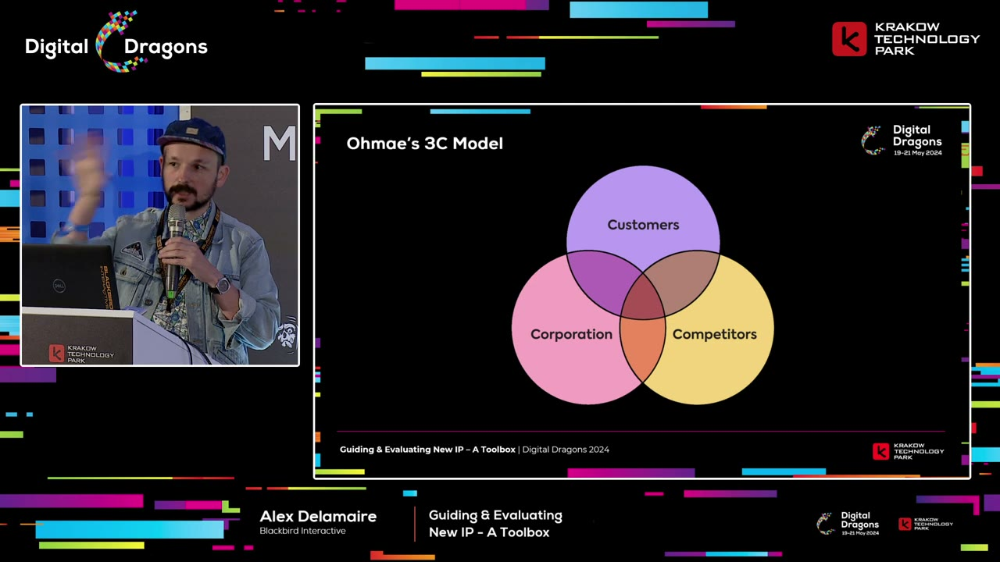
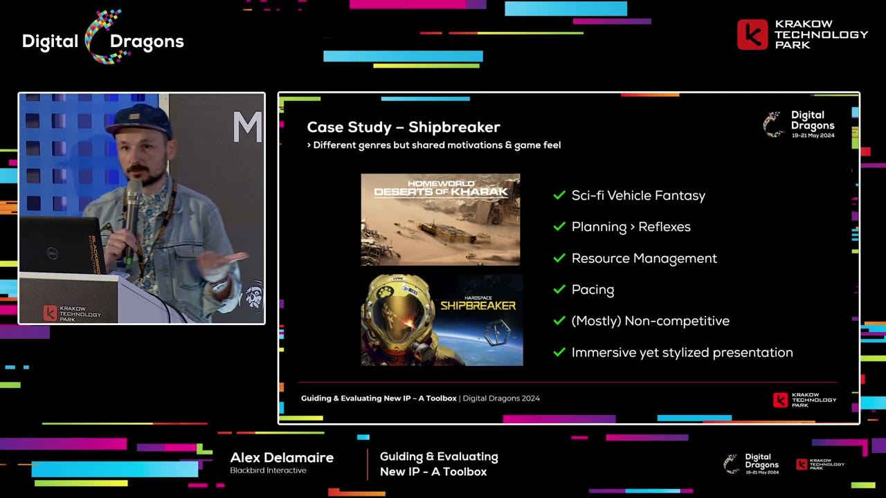
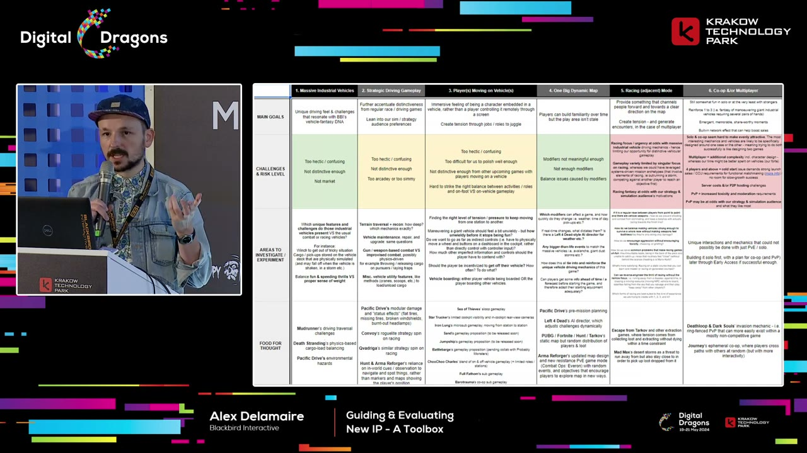
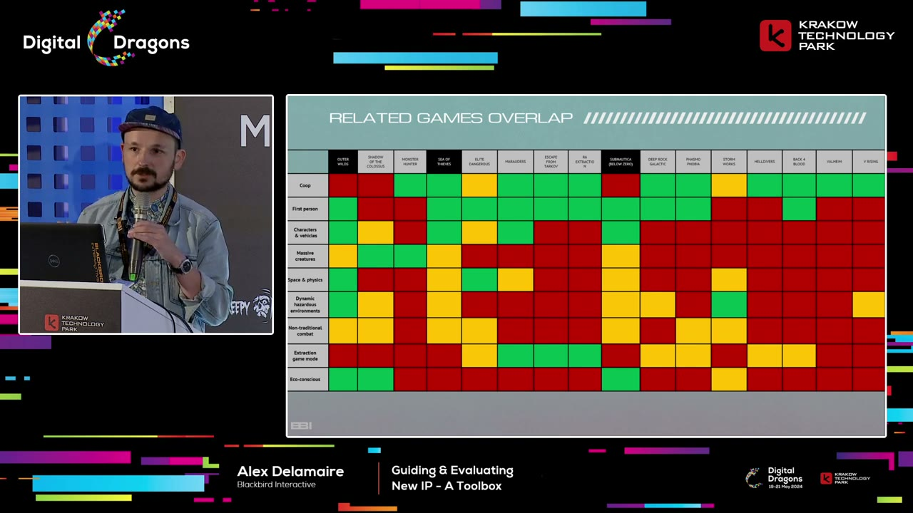

Start here
The overview
Alex Delamaire offers a toolbox for developing original game properties rather than a guaranteed sequence for producing a hit. His approach connects three questions: what players want, what the competitive landscape leaves open, and what this team is especially suited to make. Blackbird examples show how that thinking becomes pitches, risk matrices, prototypes, and comparison sets. The aim is to make creative risk visible and testable while preserving the personal reasons a team cares about its idea.
What the snapshots add
- The inspected 3C and Shipbreaker slides make the connection between market opportunity and studio identity explicit.
- Two matrices show how to turn a speculative concept into risks, experiments, and a qualified comparison set.
What to take away
- Study unmet needs rather than only today’s winners
Genre revenue describes the present; feedback and changing player motivations can reveal opportunities for a game that will ship years later.
- Connect novelty, familiarity, and a personal reason
An original property needs a readable proposition and a genuine connection to the team, not just a new label on a familiar product.
- Break ideas into ingredients before funding the whole vision
Define what each ingredient should achieve, identify its risks, and choose experiments that resolve those uncertainties.
A toolbox for defining the creative space, not a formula for a hit
Delamaire introduces the talk as a toolbox because original intellectual property is complicated and different projects need different tools. He does not claim a universal method from A to Z. His background is business development, communications, and advertising strategy, with experience connecting business realities, research, and consumer insights to creative teams. That background shapes the kinds of questions he asks.
He recalls working on a BlackBerry campaign aimed at younger people through music. In his view, the communications assignment could not solve a deeper problem in the product's competitive position. The experience made him interested in research that informs what gets made before advertising has to sell it. Marketing at the end of development can only change so much.
He contrasts that with IDEO's shopping-cart design example: observe how people use a product, understand the problems, and then change the design. He describes removable sections for heavy items and a scanner as examples of practical responses to user needs. The relevant lesson for games is the relationship between observation and conception, rather than any claim that designing a cart and designing a game are identical tasks.
Trend research also influenced him, especially work that looks beneath superficial fashions toward changes in behavior and culture. A short-lived trend may offer little substance, while a deeper change can inform both the product and its communication.
His metaphor is setting the perimeter of a sandbox. Designers build the sandcastle; his work helps establish where the team has a reason to believe it can operate and where it begins taking additional risk. Crossing the boundary is not forbidden. Original work requires risk, but the team should understand what risk it is choosing rather than discover it only after committing to production.
Why new IP remains valuable in a market full of established games
The market picture he describes is discouraging: established and live-service games retain attention, cross-platform availability and backwards compatibility extend their lives, and publishers can use discounts and extra content to keep them commercially active. Familiar franchises and licenses offer an obvious way to reduce some uncertainty. He also points to studio closures and a wider retreat toward existing properties in the period of the talk. These are historical observations and examples, not a current industry report.
At the same time, he cites recent original successes such as Lethal Company and Manor Lords as reasons not to abandon new properties. A difficult market does not erase the possibility of finding an audience. The decision depends on the financial exposure, size of the team, and kind of product being proposed. The existence of hits is encouragement to investigate, not proof that any original concept is safe.
Owning a property also changes what a studio can build over time. He uses a Disney-style business flywheel to describe characters, stories, games, merchandise, and other forms reinforcing one another. A team working only inside someone else's license may benefit from its familiarity without owning those longer-term opportunities.
His examples range from major entertainment franchises to Five Nights at Freddy's and smaller studios building durable relationships around their own games. He argues that a recognizable property and a direct fan relationship can provide stability and options for sequels, expansions, and related experiences. His comments about which Vancouver studios had avoided layoffs are his observations at recording time, not a controlled comparison proving ownership alone protects jobs.
The argument is therefore a tradeoff. Borrowing a familiar license may lower some discovery risk, while building something owned can preserve more future upside and creative control. A studio should consider both the immediate production challenge and the value of the relationship it might establish.
Look beyond current genre earnings to the gaps players reveal
Genre viability is a useful starting point. Delamaire mentions market-analysis resources that compare median revenue and audience demand, but warns that attractive figures do not describe the whole opportunity. A genre may require production values, budget, and staffing the team cannot supply. It may also have dominant incumbents that make entry unusually difficult.
More importantly, a game begun now may ship four or five years later. Tastes, competitors, and culture will change in between. Copying what currently sells can leave a team responding to yesterday's opportunity. He wants research to help identify what might come next.
For Earthless, Blackbird examined Steam and press reviews of relevant games, categorizing recurring praise and complaints and counting themes. The inspected slide shows positive and negative lists with counts, though the individual small entries are not all legible. The purpose is to identify patterns in player experience rather than cherry-pick a favorable quotation.
He describes using ChatGPT to summarize review themes as a way to reduce manual work and says its output on a recent project was close to what the team had observed itself. This is his account of a particular use, not an independent claim that automated analysis is always accurate. The value he sees is faster access to a possible gap in the market, with empirical familiarity providing a comparison.
His phrase for the opportunity is negative space: look at what existing games do and at the wishes or frustrations around them to infer a shape that is not yet fully present. People may describe an improved version of what they already know—a “faster horse”—without proposing the eventual new product. The creative team still needs to interpret the underlying problem.
Player motivations can reveal a different kind of cooperative experience
Motivational frameworks and player personas can help distinguish desires hidden within a broad genre. Delamaire discusses Quantic Foundry alongside a Big Five personality diagram, considering questions such as collaboration versus competition, social interaction, and preferred pacing. He presents these as lenses for noticing unfulfilled aspirations, not rigid categories that fully predict each player's choices.
During the pandemic, Blackbird noticed games becoming social spaces and a form of theatre. GTA roleplay and Among Us suggested that players wanted places to bring their own interactions, stories, and performances, not only mechanics to master. The team interpreted the period's isolation as making that need more visible.
Project Puffin was an exploration of that opportunity. The inspected concept slide identifies third-person cooperative sandbox espionage. Delamaire describes a multiplayer Hitman-style proposition with a colorful crew: friends enter an open location, split up to explore, discover opportunities and optional rewards, and discuss how to accomplish shared objectives.
The interesting tension comes from communication and improvisation. A heist-film moment in which everyone pretends to be ordinary while coordinating privately is a reference point. The game should reward analyzing a situation, agreeing on a plan, and recovering when it goes wrong, rather than simply shooting faster. A vault could bring the group together while one person distracts guards and others carry out the break-in.
He emphasizes brains over reflexes and a spectrum of failure from which players can recover. The social experience and the action systems are meant to support the same fantasy. At the time of the talk, he says the project is on pause. It is offered as a development example of translating a perceived audience need into a concept, not as an announced commercial outcome.
Consider the wider culture without pretending it is predictable
Delamaire sees another kind of opportunity in the cultural setting around a game. His reading of Helldivers is that its shared language and collective fiction make it easy for strangers to act as members of the same group. Beyond the parody, slogans and a common mission can give players an immediate way to relate to one another. He contrasts that with multiplayer spaces where incompatible levels of seriousness or roleplay make social coordination harder.
He also offers two deliberately speculative examples. Skyrim may have benefited from Game of Thrones putting dragons and a northern fantasy setting into wider public attention. Baldur's Gate 3 may have benefited from the increased visibility of tabletop role-playing, including streamed games and remote sessions. He explicitly lacks proof of the Skyrim connection. These examples illustrate possible cultural tailwinds; they do not establish what caused either game's sales.
The implication is to watch what experiences people are becoming interested in outside the narrow list of competing games. A game can resonate with an emerging fantasy or social need, but a team cannot reliably schedule a cultural phenomenon to coincide with launch. This lens supplements product quality and audience fit rather than replacing them.
He also discusses search behavior as a source of relatively candid questions and concerns. People may type things into a search engine that they would not say in a formal interview, so patterns around a subject can suggest unmet needs or interests. His advertising example is looking at searches around food and recipes. The opportunity lies in noticing behavior as well as listening to stated preferences.
Find the overlap between customers, competition, and the studio
After looking outward, Delamaire turns inward. The inspected 3C diagram names Customers, Competitors, and Corporation. A useful opportunity sits where audience desires, the competitive context, and the team's strengths intersect. Studying only the market leaves out the question of why this studio should make this particular game.
He recalls an identity discussion at Relic in which even a well-established studio needed to ask what it was good at. Acquisitions, leadership changes, and staff turnover can erode shared understanding. People may disagree about the team's strengths and weaknesses, so company knowledge needs to be made explicit rather than assumed.
His informal rule of thirds for new IP combines something new, something familiar, and something personal. The new element gives the proposition a reason to exist. The familiar element lets people understand what kind of experience is being offered. The personal element connects it to the team's interests and identity. These are thinking prompts rather than a literal accounting system for features.
The personal connection serves two purposes. It gives the work a distinctive voice, and it helps people remain committed through a difficult development process. A market opportunity that no one on the team cares about may be less durable than its spreadsheet suggests.


Shipbreaker changed genres while preserving deeper studio strengths
Hardspace: Shipbreaker looks very different from Homeworld: Deserts of Kharak at the level of genre. One is a first-person game about dismantling spacecraft; the other is a real-time strategy game. Delamaire uses the pair to show why surface genre similarity is not the only way to identify a studio's transferable strengths.
The inspected comparison slide lists a shared science-fiction vehicle fantasy, planning over reflexes, resource management, pacing, mostly noncompetitive play, and immersive but stylized presentation. In the strategy game, vehicles are units to command and watch; in Shipbreaker, they become intricate physical structures to enter and understand. The fascination with machines remains even as the viewpoint changes.
The reactor example makes the planning connection concrete. To remove a reactor safely, the player must consider its casing, the opening needed to extract it, and whether cutting that opening will trigger depressurization. Oxygen, tools, health, and other resources add constraints. These are related forms of forward thinking and resource management expressed through a different interaction model.
The project was also personal. Delamaire says several people in leadership had worked in demanding manual jobs, including on Alberta pipelines. Themes of labor, recognition, pride, and unions connected to their experiences and to discussions in the game industry. He notes that Blackbird moved to a four-day workweek while making the game. The connection is part of his account of the studio's culture, not something established by the gameplay comparison slide alone.
The example shows how a studio can make something original without abandoning everything it already does well. The deeper continuity may be a fantasy, a pace, a problem-solving style, or a set of values rather than the exact controls or genre label.


Give original ideas a structured place to develop
Blackbird's Skunk Works program gives employees a recurring opportunity to propose new ideas. Delamaire describes finding a couple of slower weeks roughly every year or year and a half, encouraging teams across projects and disciplines, and preparing them for a pitching session. Different perspectives are an advantage rather than a departure from a single project's established group.
The team initially asks for a paper pitch, not a playable prototype. Participants receive guidance, design prompts, and parameters such as budget. They should explain the market fit, the connection to Blackbird, the chance of remaining relevant several years later, and why the idea matters to them personally. The work is to make the proposition coherent before investing heavily in implementation.
If an idea is selected, the studio puts resources behind developing a prototype. Delamaire says unused ideas remain with their originators; the inspected slide adds that selected pitches lead to an originator payout and unused rights revert to them. This description belongs to the program presented in the talk, rather than a general employment-IP rule. Shipbreaker and Earthless are examples he says emerged through the process.
Once a prototype is developed far enough, the studio can approach publishers. He explains that Blackbird could co-invest but was not positioned to fully finance all the games it wanted to make. Publisher discussions also supply external feedback. Internal enthusiasm is valuable, but does not remove the need to test how other people understand the proposition.
Among the preparation topics are clear hooks and the way design affects discoverability. A game that lets players build bases, create designs, or author something personal gives them a reason to share what they made. His Animal Crossing example is the circulation of player-created clothing and designs. Sharing is supported by the experience itself rather than being only a promotional request outside it.
He also values what he calls table-flip games: games that communicate an understandable proposition while retaining meaningful surprises. Inscryption and Doki Doki Literature Club are his examples of experiences that change the player's understanding as they unfold; he also mentions unexpected extra activities inside a larger game. In an environment full of advance explanation, preserving discovery can help make an experience memorable. The challenge is to retain surprise without making the initial proposition incomprehensible.
Validate the promise before committing to the full production
Delamaire recommends testing ideas early and repeatedly. Paper discussion, a small public tease, open development, Kickstarter, or Early Access can each reveal something at a different stage. New IP already involves unfamiliar territory, so designing for years inside a closed box adds avoidable uncertainty about whether other people understand or want it.
He points to PlayWay's many clearly pitched Steam concepts as one way to investigate response before a full product is certain. He compares this with concept testing through mobile advertisements, while acknowledging that not every listed concept necessarily becomes a released game. These are examples in his argument about testing interest, not evidence that a promising click rate validates a playable experience.
Industries of Titan is another example: he says Brace Yourself Games developed a trailer before a fully playable prototype to gauge audience enthusiasm. A trailer can also force the team to organize how it explains the game. That communication problem can reveal weaknesses in a proposition before they become expensive production assumptions.
He refers to a talk on making a trailer before a game as a deliberately provocative version of the same idea. The important question is which early artifact can test the uncertainty the team currently faces. Understanding a pitch, wanting to click it, enjoying a prototype, and sustaining interest in a full game are related but different forms of evidence.
Turn an ambitious pitch into ingredients, purposes, and experiments
Project Timberwolf illustrates how Blackbird analyzes a concept on paper. The inspected slide identifies it as a first-person, vehicle-based cooperative battle racer. Delamaire describes huge vehicles moving across an off-road landscape, with players shifting among roles such as driving and scouting ahead with a drone. A restricted cockpit view creates a reason to cooperate. The intended feeling is a Mad Max-style chase carried out by a crew.
The team begins by reducing that vision to a small set of ingredients. The inspected matrix has six columns: massive industrial vehicles, strategic driving gameplay, players moving around on vehicles, one large dynamic map, a racing-adjacent mode, and cooperative/competitive multiplayer. The purpose is not to settle a debate over whether something is a feature or a pillar. It is to create a shared picture of what the game actually is.
Each ingredient is then examined through rows for its main goal, challenges and risk level, areas to investigate or experiment with, and reference material. A large dynamic map, for example, should let players become familiar with terrain while still encountering variation from conditions such as weather. Naming the feature is only the start; the team needs to know what experience it serves.
The racing structure produces a concrete audience question. Blackbird's existing games often favor thinking and a measured pace. Would constant forward pressure fit those players, or would it clash with a strength the concept is supposed to preserve? Other matrix headings expose different unknowns, such as whether large vehicles feel distinctive, whether the driving becomes too arcade-like or too simulated, and how players divide attention between moving around and operating the vehicle.
Those questions become candidates for experiments and prototypes. A small test can investigate crew coordination or movement before the team tries to build the entire world. The slide's individual cells are dense and partly limited by the recording resolution, but its structure is clear: ingredients, intended benefits, specific risks, and next investigations. That structure makes disagreement and uncertainty discussable.


For an unusual game, compare ingredients rather than force one perfect rival
A second cooperative concept involves approaching and scaling enormous creatures without killing them. Delamaire likens it to a gentler Monster Hunter or Shadow of the Colossus, with vehicles and giant moving spaces to navigate. The seed came from Shipbreaker's dynamic ship interiors: could related technology support a different kind of moving terrain, this time the outside of a creature?
Again the team reduces the concept to a minimal shared description. It then collects reference games that match some aspect of the idea and compares them ingredient by ingredient. An unusual proposal may have no single obvious competitor. Forcing it into one genre comparison can hide what actually matters.
The inspected related-games matrix uses red, yellow, and green cells across cooperation, first-person perspective, characters and vehicles, massive creatures, space and physics, dynamic hazardous environments, nontraditional combat, extraction structure, and ecological themes. Named references span quite different games, including Outer Wilds, Shadow of the Colossus, Monster Hunter, Sea of Thieves, Subnautica, and others. There is no numerical sales scale or explicit legend in the frame, so the colors should be read as the team's qualitative overlap coding.
Delamaire gives Subnautica as a comparison that stretches surface setting: moving underwater can resemble moving in space for some functional questions. The purpose is to identify the aspect that transfers, not declare the two settings interchangeable. Once the team finds the closest overlaps, it can examine those games' player motivations, commercial scale, and difficulties to judge whether the new combination is plausible.
The matrix is a way to reason about a strange idea, not a calculation proving demand. It makes the comparison assumptions visible enough to challenge and improve.


Use existing spaces to test ideas, and learn about the studio as well
Delamaire closes with smaller ways to explore ideas before making a completely separate product. DLC can mix safer releases with experiments. He describes The Sims as an example of a pipeline in which some additions test whether an audience likes a less certain direction. He also interprets Prey: Mooncrash as a place where ideas later associated with Deathloop could be explored with an existing audience.
Mods can reveal what players want to build or how they want to alter an experience. Arma is his main example, including the paths associated with DayZ and PUBG and the ways official projects can learn from popular modes. The broader point is to watch where an existing audience invests effort: an emergent use may suggest an unmet need or a viable variation.
He even mentions April Fools' material as an unexpected way to surface a concept, referring to the Pandaren's path through Warcraft. These examples are not interchangeable production plans, and none guarantees that a tested idea can support a separate game. They illustrate how a smaller or more familiar environment may make experimentation less expensive than a full leap into a new property.
The process also produces something besides a pitch. At Blackbird, discussing what the team is good at, what it cares about, what resonates with players, and where the market is moving strengthened a shared sense of studio identity. The research and debate helped the people doing the work understand their company more clearly.
His final reference is a design-focused discussion of design as a search algorithm: exploring a space of possible mechanics. It complements his market and identity lenses rather than replacing them. Although the opening agenda mentioned questions, the retrieved recording ends at the close of the presentation and contains no substantive audience Q&A to summarize. The final lesson remains the toolbox's purpose: make an original proposal intelligible, understand its risks, and learn enough at each stage to decide what deserves the next investment.
Source & limitations
This is an editorial synthesis of Alex Delamaire - Guiding & Evaluating New IP - A Toolbox, published by Digital Dragons. Timestamp links open YouTube at the corresponding section.
- Based on the complete English automatic captions and 10 inspected snapshots covering review analysis, player motivations, concept pitches, studio strengths, incubation, and two evaluation matrices. Intervening footage, prototypes, and animations were not exhaustively reviewed.
- The dense matrices are partly limited by the recording resolution. Their headings and structure are described, but the article does not claim to transcribe every small cell or infer a quantitative meaning for the color coding.
- Industry events, commercial claims, and descriptions of Blackbird projects and policies reflect the talk's historical perspective. The speaker's cultural explanations and interpretations of other games are attributed rather than presented as proven causes.
Inspected snapshots (10)
Selected stills, not continuous video review. Observations below describe the inspected frames.
15:45 ↗
- Earthless research slide shows manually categorized positive and negative review themes with counts; the small individual review text is not fully legible.
18:20 ↗
- Player motivations slide places a Quantic Foundry motivation map beside a Big Five personality diagram.
20:30 ↗
- Project Puffin concept slide identifies third-person cooperative sandbox espionage, with an illustrated crew and a heist-game comparison.
28:50 ↗
- Ohmae’s 3C Model is a three-circle overlap of Customers, Corporation, and Competitors.
30:50 ↗
- Shipbreaker comparison lists shared sci-fi vehicle fantasy, planning over reflexes, resource management, pacing, mostly noncompetitive play, and immersive but stylized presentation.
32:40 ↗
- The shared-traits Shipbreaker and Deserts of Kharak slide remains visible; this frame does not show the personal labor-history discussion.
35:10 ↗
- Skunk Works slide describes an internal research and IP incubation program run roughly yearly since 2019; selected ideas lead to an originator payout and unused rights revert to the originators.
42:20 ↗
- Project Timberwolf is labeled a first-person vehicle-based cooperative battle racer, with large-vehicle concept art and a Sea of Thieves plus Fall Guys comparison.
44:20 ↗
- Timberwolf matrix has six ingredient columns: massive industrial vehicles, strategic driving gameplay, players moving on vehicles, one big dynamic map, racing-adjacent mode, and cooperative/competitive multiplayer. Rows are main goals, challenges and risk level, areas to investigate or experiment, and food for thought; small cells have limited legibility.
46:40 ↗
- Related-games overlap matrix compares named games using red, yellow and green cells across cooperation, first-person view, characters and vehicles, massive creatures, space and physics, dynamic hazardous environments, nontraditional combat, extraction mode, and ecological themes. It is a feature comparison, not a sales chart, and no numeric scale or legend is shown.
Read the timestamped source captions
en-orig · automatic captions. Caption errors and non-speech labels are retained in this source view.
0:07 ↗ [Music]
0:20 ↗ um cool well let's um let's get started
0:23 ↗ let's get right into it then um quick
0:25 ↗ overview of what we're going to talk
0:26 ↗ about today so um I'll do a bit intro
0:29 ↗ who am I where do I I come from so you
0:31 ↗ kind of understand the lens with which
0:33 ↗ I'm looking at this thing um then we'll
0:35 ↗ have to talk a little bit about the
0:37 ↗ elephant in the room which is you know
0:38 ↗ new IP in the market today it's pretty
0:40 ↗ tough uh but you know I think there's
0:43 ↗ still a lot of value in there um and
0:45 ↗ then we'll look um at some you know um
0:48 ↗ tools framework um kind of ways that you
0:50 ↗ can um approach how you look at things
0:54 ↗ uh to find inspiration whether it's how
0:56 ↗ you look at the market or look at
0:58 ↗ yourself and your company your studio
1:00 ↗ you're great at and how you connect
1:01 ↗ those two to find you know the version
1:03 ↗ of new IP that works best for you um and
1:06 ↗ during that process I will also share a
1:07 ↗ little bit of what uh Blackbird does
1:10 ↗ which is the uh The scunt Works project
1:12 ↗ um so it's an initiative that we have um
1:15 ↗ every year to help uh incubate new ideas
1:17 ↗ new IP um then we'll touch a little bit
1:19 ↗ on um once you've come with these new
1:21 ↗ ideas how do you explore and validate
1:23 ↗ them um including touching on a few
1:26 ↗ shortcuts and and hacks that you know
1:28 ↗ you can benefit from um and then finally
1:31 ↗ um we'll we'll kind of recap um and take
1:34 ↗ a few questions okay um so first thing
1:38 ↗ first before I I I dive into everything
1:40 ↗ um thank you so much for you know having
1:42 ↗ me here and also a big special thanks to
1:44 ↗ digital dragons because three years ago
1:47 ↗ uh one of our games hard space
1:48 ↗ shipbreaker actually um you know placed
1:50 ↗ second um in the awards and
1:53 ↗ unfortunately we we couldn't be here was
1:54 ↗ still the pandemic it was still hard for
1:56 ↗ us to travel out of Canada um and so
1:59 ↗ yeah I'm I'm I'm glad I get to to to be
2:01 ↗ here now and to meet all of you um and a
2:04 ↗ little bit of a disclaimer about this
2:05 ↗ talk as well um and so I didn't put this
2:08 ↗ slide just because it's cool to have
2:10 ↗ this uh this nice shipbreaker branded
2:12 ↗ toolbox that a fan created um but I want
2:15 ↗ to talk a little bit why why did I call
2:17 ↗ this a toolbox um so if you think about
2:20 ↗ a toolbox it's a bit messy and this talk
2:23 ↗ will also be going a bunch of different
2:25 ↗ directions I don't have you know a super
2:28 ↗ clear meod that you should follow um a
2:30 ↗ toz to have your new IP new IP is a
2:33 ↗ complicated topic so I I don't pretend
2:35 ↗ to have all the answers um but there's a
2:38 ↗ lot of tools there and you know probably
2:40 ↗ you're going to find tools that work for
2:42 ↗ the kind of problem that you have right
2:44 ↗ now um at your studio just like in a
2:46 ↗ toolbox there's you know tools for every
2:48 ↗ kind of use um yeah so a bit more about
2:52 ↗ about me um so I am currently uh in
2:54 ↗ charge of Business Development and
2:55 ↗ Communications at Blackbird Canadian
2:57 ↗ Studio there has done heartspace
2:59 ↗ shipbreaker home World 3 recently we
3:01 ↗ also did Minecraft Legends Crossfire
3:03 ↗ Legion um before I I got into games um
3:07 ↗ I've been in games for about like 12
3:09 ↗ years I used to be in advertising so I
3:11 ↗ worked for a bunch of agencies um and I
3:14 ↗ was doing what people call a bit
3:16 ↗ bombastically uh strategic planning um
3:19 ↗ and so what what what that means is um
3:21 ↗ the Strategic planner is the person who
3:23 ↗ helps connect the reality of the
3:25 ↗ business um takes the data and then try
3:28 ↗ to extract unique consumer insights
3:30 ↗ there that creative teams can then
3:31 ↗ create a product around in this case the
3:33 ↗ product was was um you know advertising
3:36 ↗ um so that that's really My Lens like
3:37 ↗ I've um you know I studied Humanities
3:39 ↗ I'm originally French now I live in
3:41 ↗ Canada um but that that's kind of like
3:43 ↗ the the lens through which I I look at
3:45 ↗ things um and so I've worked at Bethesda
3:47 ↗ that's where I started my career when
3:49 ↗ they open um a marketing office in
3:51 ↗ France then moved to um Canada working
3:55 ↗ with Relic um on the company first
3:57 ↗ franchise then h on long dark and N
4:00 ↗ Blackbird um on the side I also help um
4:03 ↗ a bunch of Indie teams friends people
4:06 ↗ that you know have come across um as I
4:08 ↗ always say someone who does bis Dev if
4:10 ↗ you if you only keep your knowledge to
4:12 ↗ yourself and don't help anyone else it's
4:14 ↗ wasted you usually know a lot more than
4:16 ↗ what is applicable to your studio so I I
4:18 ↗ try to do that um and so Studios have
4:20 ↗ helped recently include um um ever
4:23 ↗ curious they announced a game with a
4:25 ↗ bloom with nine dots a publisher I've
4:27 ↗ helped connect a bunch of people around
4:29 ↗ the the triple ey initiative which
4:30 ↗ you've probably seen recently um yeah
4:33 ↗ okay so how did I you know um get here
4:37 ↗ and and basically what has informed my
4:39 ↗ my thought process and what we're going
4:40 ↗ to talk about so um when I was in
4:43 ↗ advertising I I got into a few
4:45 ↗ situations where um there was that old
4:48 ↗ adage that that came back to me which is
4:49 ↗ you know you can put as much lipstick as
4:51 ↗ you want on a pig it is still a pig um
4:53 ↗ and so what I mean by that is sometimes
4:56 ↗ when you're in advertising you're you're
4:57 ↗ very much at the end of the of that kind
4:59 ↗ of process and you have to deal with a
5:02 ↗ product where the the main problem is is
5:04 ↗ the product itself um you know trying to
5:06 ↗ solve it through Communications but
5:07 ↗ Communications can only do so much and
5:09 ↗ in my case the black sheep the the
5:11 ↗ turning point was Blackberry um so in
5:13 ↗ the early 2010 we had Blackberry as a
5:15 ↗ client and they came to us and they were
5:17 ↗ like we uh want to do a campaign you
5:20 ↗ know that revolves around music to try
5:22 ↗ to entice young people to use
5:24 ↗ blackberries and I was like this is
5:26 ↗ stupid um do you guys know about
5:27 ↗ the iPhone and the iPad like this has
5:30 ↗ been preempted forever in your category
5:31 ↗ it doesn't make sense but you know
5:34 ↗ that's that's how they they they they
5:35 ↗ perceived the the product that was the
5:37 ↗ Mandate that was coming from them and so
5:39 ↗ it was really hard for us to to to um to
5:41 ↗ move away uh from that and so um it kind
5:44 ↗ of um you know um started me on a on a
5:46 ↗ journey to think a little bit more about
5:48 ↗ what comes before advertising and and
5:51 ↗ the ways that you can actually um inform
5:54 ↗ through research and marketing at the
5:56 ↗ conception of a product um so a very
5:58 ↗ famous um you know agency and case study
6:01 ↗ is Ideo what you see here is um an
6:04 ↗ exercise they did I think 20 years ago
6:06 ↗ about redesigning a shopping cart and so
6:09 ↗ you know what they do is they do um user
6:11 ↗ research they do field studies they talk
6:13 ↗ to people they come see how people use
6:15 ↗ the product and then they they help um
6:18 ↗ they leverage that to help inform the
6:19 ↗ design of their product so here they had
6:21 ↗ some cool stuff with um you have some um
6:24 ↗ different parts of of the cart that can
6:25 ↗ be removed um so you can more easily put
6:28 ↗ heavy items in so you don't have to you
6:30 ↗ know bend over as much and hurt your
6:31 ↗ back you have a scanner on the side that
6:34 ↗ makes it that much faster uh for you to
6:36 ↗ know the price of certain things so you
6:38 ↗ know really really interesting process
6:40 ↗ so I was like okay you know that's
6:42 ↗ something that I I I want to do more of
6:44 ↗ and and you know if I move into another
6:46 ↗ field that's what I'd like to focus on
6:49 ↗ um there's also an advertising you know
6:51 ↗ a lot of U um Obsession for Trends um
6:56 ↗ and so you know Trends can be pretty
6:57 ↗ fickle and they don't always have a lot
6:59 ↗ of of meat to them but sometimes they
7:02 ↗ they they can be pretty deep and so uh
7:04 ↗ when I was working in advertising those
7:06 ↗ are you know kind of two uh agencies
7:08 ↗ that that stood with me like research
7:10 ↗ agencies Nelly Ry is is one that's more
7:12 ↗ specialized on um I'd say fashion
7:15 ↗ clothing um all all these kind of things
7:18 ↗ and then contagious is um sort of like a
7:21 ↗ trade magazine um but that really uh
7:24 ↗ tries to research you know deep consumer
7:27 ↗ Trends and how it's going to affect the
7:28 ↗ kind of product you you make the kind of
7:30 ↗ advertising you make and so all these
7:31 ↗ things really nurtured my my reflection
7:33 ↗ and in the end the the kind of you know
7:35 ↗ philosophy that I know have and and what
7:38 ↗ I'm going to try to um you know talk
7:40 ↗ about here is basically how do you paint
7:42 ↗ the parameters of the sandbox um so I'm
7:45 ↗ not a creative um you know I appreciate
7:47 ↗ the creative process I have a huge
7:48 ↗ respect for designers but I'm not
7:50 ↗ fooling myself I'm not a designer you
7:52 ↗ know I I I need to know enough about the
7:55 ↗ trade but that's not my role so I'm not
7:57 ↗ the one making this cool sand castle
7:59 ↗ designers do but I'm the one saying this
8:01 ↗ is how big the sandbox is this is the
8:04 ↗ perimeter in which you can safely play
8:06 ↗ and then once we go out of those bounds
8:08 ↗ then we start taking risk and we should
8:10 ↗ take risk because otherwise you make
8:11 ↗ something that has already been done and
8:13 ↗ is boring but we should all be aware of
8:15 ↗ the level of risk we're taking okay uh
8:18 ↗ so enough now about me and where I come
8:20 ↗ from but I you know it was I think
8:21 ↗ important for you to have that lens and
8:23 ↗ so let's talk a little bit about you
8:24 ↗ know new IP today um before we dive into
8:27 ↗ um how we we we research it so it's a
8:30 ↗ bit of a thorny topic and and um when I
8:32 ↗ was putting together this presentation
8:33 ↗ this quote from from Dickens um you know
8:36 ↗ came to mind because you you really have
8:38 ↗ a pretty polarized market right now um
8:40 ↗ for games like on the one hand you've
8:42 ↗ all seen this report from newu um you
8:44 ↗ know existing games life service games
8:47 ↗ not just triaa right there's also big
8:48 ↗ indie games like rust um like um you
8:51 ↗ know um Teraria all these games they
8:55 ↗ they keep retaining players so you're
8:57 ↗ like oh why why even try then you know
8:59 ↗ if if there's these games that are well
9:00 ↗ installed and entrenched um and
9:03 ↗ especially now that we have games that
9:05 ↗ can cross across platforms you know the
9:07 ↗ consoles are retr compatible we've
9:09 ↗ become expert all at um kind of life
9:11 ↗ cycle management with DLC and discounts
9:14 ↗ so it can be a bit disheartening and
9:16 ↗ then you know a week ago there was the
9:18 ↗ closure um announced by Microsoft of
9:21 ↗ some of their Studios that were um you
9:23 ↗ know famous for actually being pretty
9:24 ↗ great at newp you know Hi-Fi Rush was
9:27 ↗ supposedly one of the best um you know
9:29 ↗ success the Microsoft has found in uip
9:31 ↗ recently Arcane you know has pioneered
9:34 ↗ many new games in the immersive Sim
9:36 ↗ genre and yeah they were they were shut
9:39 ↗ down that same week as well redy
9:40 ↗ announced that they were narrowing down
9:42 ↗ their bets um to existing IP and so they
9:45 ↗ they dropped off Castrol and then if you
9:48 ↗ look even at the the Indie Darlings and
9:50 ↗ where there's a lot of creativity coming
9:52 ↗ on it can also maybe feel you know a bit
9:54 ↗ dispiriting you like I don't know if I
9:56 ↗ had slay Des spirate to on the cards you
9:58 ↗ know pun intended but I'm like wow okay
10:00 ↗ a followup to State Aspire but yeah you
10:03 ↗ know independent creators as well feel
10:05 ↗ the need to to leverage existing in nonp
10:08 ↗ um the creators of subnotica after Moon
10:10 ↗ breaker they're going back to subnotica
10:12 ↗ 3 um so like w okay is it is it that
10:15 ↗ dire and certainly the environment right
10:17 ↗ now is is very um I would say licenser
10:21 ↗ friendly if you look at how many games
10:23 ↗ are you know being impulsed by those big
10:24 ↗ corporations there there is a ton I mean
10:27 ↗ hogwart's Legacy was probably the
10:29 ↗ biggest game of last year with bers gate
10:31 ↗ um you know we're talking about Arcane
10:33 ↗ they're making a Marvel game blade U
10:35 ↗ you've had many alien games coming many
10:38 ↗ more Star Wars games Hasbro is making
10:40 ↗ a$1 billion doll bet um you know
10:42 ↗ leveraging DND D and and GI Joe and
10:44 ↗ their other franchise is even devolver U
10:47 ↗ has reorganized good sheeper um to be
10:50 ↗ focusing on licensing so you know I
10:53 ↗ wanted to address that because when I
10:55 ↗ agreed to make this talk I was like oh
10:57 ↗ what did I sign up for you know um am I
11:00 ↗ am I encouraging people to just go in a
11:02 ↗ in a in in a mainfield but yet there is
11:04 ↗ hope um and so if you look at all those
11:07 ↗ games they're all pretty recent they're
11:08 ↗ all new IP they've all done terrific in
11:10 ↗ different genres I mean Stell blade
11:11 ↗ pretty recently um you know um there's
11:14 ↗ lethal company Manor Lords is is a
11:16 ↗ magnificent one um and so it's still you
11:20 ↗ know I think a very very um valid path
11:22 ↗ the thing that you have to navigate is
11:24 ↗ yeah the amount of you know Financial
11:25 ↗ Risk you're taking how big your team is
11:27 ↗ um but I I think it's important to not
11:30 ↗ be completely bugged down um by the news
11:32 ↗ about existing games and and franchises
11:35 ↗ and the reason why I think it's
11:36 ↗ especially important uh when you're
11:38 ↗ starting as as a studio because you know
11:41 ↗ I see it in Vancouver there's many
11:42 ↗ studios where now they're being
11:43 ↗ approached by licensers or other Studios
11:45 ↗ that have an existing IP and they're
11:47 ↗ like oh you know why don't you work with
11:49 ↗ our thing you know it'd be better and
11:50 ↗ the risk would be uh lower which is kind
11:53 ↗ of true but also you don't own this
11:55 ↗ thing and when you own an IP you have a
11:57 ↗ chance at this so so this is the famous
12:00 ↗ flywheel that you know Walt Disney uh
12:02 ↗ Drew I think 40 years ago when he was
12:04 ↗ trying to explain the business he was
12:06 ↗ building around the character and the
12:08 ↗ franchises they were developing and he
12:10 ↗ was like yeah it all feeds one another
12:12 ↗ you know the characters go into movies
12:14 ↗ they become toys the movies inspire you
12:17 ↗ know um environments for seam parks and
12:20 ↗ rides and all this so it's all a
12:22 ↗ virtuous cycle and you can only do this
12:24 ↗ if you have um your own IP famously
12:28 ↗ blizzard um when they set out to do uh
12:31 ↗ Warcraft they were initially looking to
12:33 ↗ license Warhammer from GES Workshop but
12:36 ↗ you know they were unknown at the time
12:37 ↗ and so Games Workshop was like not not
12:39 ↗ really interested so imagine if they had
12:41 ↗ done that no Warcraft movie no nothing
12:44 ↗ so it would have kind of cut short 20
12:46 ↗ years later um what they could do um
12:49 ↗ with that IP and so I think it's really
12:50 ↗ important because we're seeing it now
12:52 ↗ you know you have big titles full out
12:54 ↗ Last of Us Mario they're yeah they're
12:56 ↗ all really taking advantage of the
12:58 ↗ flywheel those are movies but if you
13:00 ↗ look at a property like Minecraft
13:02 ↗ they've been making more money every
13:04 ↗ year from merch and derivative than from
13:06 ↗ the core games you know and they're also
13:08 ↗ working on a movie so I think it's CR
13:10 ↗ critical and I think also it's not just
13:12 ↗ something for big studios um you know
13:15 ↗ five nighted Freddy's um was one of the
13:18 ↗ well I think it was actually the biggest
13:19 ↗ Halloween movie this year with
13:21 ↗ bloomhouse so here again you know if if
13:23 ↗ it was not their IP they wouldn't reap
13:25 ↗ the benefit of that and then tiny build
13:27 ↗ has been exceptionally good at at you
13:29 ↗ know uh building around their IP um and
13:33 ↗ just looking in you know at what I know
13:35 ↗ Vancouver where I live the studios that
13:37 ↗ have weathered the current industry
13:39 ↗ storm that we see the one that are the
13:40 ↗ more robust they all own their IP um
13:43 ↗ they've all created them they're all now
13:45 ↗ expanding upon them whether it's you
13:47 ↗ know um hinan making um this kind of
13:50 ↗ like season pass with the long dark
13:52 ↗ whether it's Clay making you know games
13:55 ↗ that are thematically related ight
13:58 ↗ making a sequel to to um the forest
14:00 ↗ they're all the studios that you know
14:02 ↗ all those Studios as far as I know in
14:04 ↗ Vancouver they haven't laid off anyone
14:06 ↗ they haven't um whereas there's a lot of
14:08 ↗ other Studios I mean including Blackbird
14:10 ↗ we went through you know some
14:11 ↗ challenging times with our publishing
14:13 ↗ Partners or unfortunately we we we had
14:15 ↗ to let people go um so I to me I think
14:17 ↗ that there's something there in terms of
14:19 ↗ like owning you know really a strong fan
14:22 ↗ base where you have direct access you
14:23 ↗ can over time monetize fine love and
14:26 ↗ that's that's a a source of stability
14:29 ↗ okay so uh now hopefully I convinced
14:32 ↗ everyone that um you know it's it's a
14:34 ↗ risk worth taking um um um while being
14:37 ↗ aware of of the you know the challenges
14:40 ↗ um how do you start about you know uip
14:42 ↗ so the first thing that everyone will
14:44 ↗ tell you is look at the market look at
14:45 ↗ what's selling you know gen viability
14:48 ↗ there's a lot of really cool resources
14:49 ↗ there that you can find um especially um
14:52 ↗ there's Chris zukovsky um on the how to
14:54 ↗ Market a game blog there is you know
14:56 ↗ Simon CIS and game discover Co all all
14:59 ↗ those will will give you yeah obviously
15:00 ↗ a really good sense of um the median
15:03 ↗ Revenue per genre um and then you should
15:05 ↗ also do a little bit of a investigation
15:08 ↗ in terms of okay certain genre have
15:10 ↗ certain production value expectations
15:12 ↗ there you know you need a certain team
15:14 ↗ size and budget to compete certain genre
15:16 ↗ may have a good median Revenue but they
15:18 ↗ may have some very entrenched leaders
15:19 ↗ there um so you know sure um if you make
15:23 ↗ it you you you send to reap some rewards
15:27 ↗ but it might be pretty hard to get into
15:29 ↗ so all this is is honestly something
15:31 ↗ that I think everyone's talking about
15:32 ↗ right now and so I don't want to dwell
15:34 ↗ too much on it um I think it's
15:36 ↗ interesting but it just tells you what
15:38 ↗ the now is what I'm more interesting is
15:40 ↗ trying to find what the then is you know
15:42 ↗ from this point in time how do we get
15:45 ↗ further and so uh when we're working on
15:47 ↗ earthless um a Rog likee deck builder
15:50 ↗ mixed with tactics at Blackbird
15:52 ↗ something we were doing was uh diving
15:54 ↗ into steam reviews and so we were trying
15:56 ↗ to categorize how often certain themes
16:00 ↗ or you know items of feedback would be
16:02 ↗ coming back in terms of like pros and
16:04 ↗ cons so you can see here it was all like
16:06 ↗ done manually where we're trying to have
16:07 ↗ those common themes rank off and they
16:09 ↗ would come back and then we do that as
16:11 ↗ well with um you know um um press
16:15 ↗ reviews so that was pretty timec
16:17 ↗ consuming now there's a wonderful tool
16:18 ↗ called chat GPT and so the beauty that
16:20 ↗ you can do with that and it's probably
16:21 ↗ one of the rare ethical uses of it is
16:24 ↗ you can feed it you can script the
16:26 ↗ reviews you can feed it the steam data
16:28 ↗ and you can actually asked GPT um to um
16:31 ↗ summarize that for you and the themes
16:33 ↗ and it works pretty well we've actually
16:34 ↗ been doing it uh this week with the
16:36 ↗ release of H World 3 um and you know
16:39 ↗ it's pretty close what what GPT has um
16:41 ↗ spit out to what we've observed um
16:44 ↗ empirically and so I think with that you
16:46 ↗ start having an interesting um starting
16:48 ↗ point where you you get a sense in a in
16:50 ↗ a genre of like okay where might be the
16:52 ↗ Gap what may be the opportunity to
16:54 ↗ improve it because ultimately this is
16:56 ↗ what you're playing against you are
16:58 ↗ starting a product now and you're going
17:00 ↗ to releasee it four or five years later
17:02 ↗ and in the meantime you know culture
17:05 ↗ taste um competition new games all that
17:07 ↗ moves forward and so here again if you
17:10 ↗ just start and focus very specifically
17:12 ↗ on what is selling now today it's
17:14 ↗ probably not was not what is going to
17:16 ↗ sell tomorrow or at least you know that
17:18 ↗ genre might sell but for different
17:19 ↗ reasons so you want to kind of like peek
17:21 ↗ through the cracks and and really sorry
17:24 ↗ you know the the the the way I like to
17:26 ↗ present it is you want to see the
17:27 ↗ negative space you know what is but is
17:29 ↗ the shape of other games to come that
17:30 ↗ you can kind of discern as you've
17:33 ↗ observed this genre as you've dived into
17:35 ↗ the player feedback and then start of
17:37 ↗ you know making out what it could be
17:39 ↗ it's very similar to the um the faster
17:42 ↗ horse you know analogy um from from
17:45 ↗ Henry Ford which supposedly said well if
17:47 ↗ I'd ask people what they wanted you know
17:49 ↗ they they wouldn't have thought of a car
17:50 ↗ it didn't exist at the time um so they
17:53 ↗ would just have thought of like yeah I
17:54 ↗ need a faster horse um so you need to
17:56 ↗ take that problem on and one uh aspect
17:59 ↗ that I find you know pretty helpful um
18:02 ↗ to look at the market um and and and and
18:04 ↗ help kind of like see that and see what
18:06 ↗ might be coming is uh motivations and
18:08 ↗ player Persona so um you're all probably
18:11 ↗ very familiar with this from you know
18:13 ↗ when when you build your games I think
18:14 ↗ it's actually a good tool to kind of
18:16 ↗ look at the market and kind of get a
18:18 ↗ sense of like in certain genres in
18:20 ↗ certain categories you know are there
18:22 ↗ some aspirations that are unfulfilled or
18:25 ↗ that could be you know fulfilled in a in
18:26 ↗ a in a different way um so I mean I I
18:29 ↗ quite like the work in general that
18:30 ↗ Quantic fundry does they they they have
18:32 ↗ a lot of interesting resources there
18:34 ↗ where they dive deep into a genre uh but
18:37 ↗ really A lot of people ultimately um you
18:40 ↗ know have created a lot of Frameworks
18:41 ↗ around that and they all derive from the
18:43 ↗ the one you have on the right which is
18:45 ↗ the uh the ocean model from psychology
18:47 ↗ the Big Five in terms of like openness
18:49 ↗ to experience um you know
18:52 ↗ conscientiousness um extra version and
18:54 ↗ it helps kind of like paint um a picture
18:57 ↗ of what you resonate with are you more
18:59 ↗ collaborative are you more competitive
19:01 ↗ um are you interested in you know social
19:03 ↗ engagement or not so much um what kind
19:05 ↗ of you know pacing is right for you um
19:08 ↗ and so thinking you know this way
19:10 ↗ something that was uh pretty uh striking
19:13 ↗ to us at Blackbird at the beginning of
19:14 ↗ the pandemic was that a lot of games
19:17 ↗ were becoming social spaces and also
19:20 ↗ basically what I would call theater um
19:22 ↗ where it's not only about the game and
19:26 ↗ its mechanics it's how that space and
19:28 ↗ how it's been created allows people to
19:31 ↗ bring something in that is very
19:32 ↗ enjoyable so GTA roleplay you know was
19:34 ↗ massive even before that time uh
19:36 ↗ exploded completely during during the
19:38 ↗ pandemic but then you know the success
19:40 ↗ of a game like Among Us especially
19:42 ↗ during pandemic times to me um is um
19:45 ↗ kind of a proof that there was a meat
19:47 ↗ there a need there that wasn't fully met
19:49 ↗ and as we all went into lockdown and we
19:51 ↗ were all separated from one another as
19:53 ↗ our options for entertainment were also
19:55 ↗ dwindling um this became even more you
19:58 ↗ know um prevalent um and so out of that
20:02 ↗ you know out of this observation at the
20:05 ↗ time um actually you know our teams when
20:08 ↗ we were doing our own original Ip
20:10 ↗ process um worked on on a g I'll just
20:13 ↗ show you a little bit there but to
20:14 ↗ explain the Genesis of it um and so the
20:18 ↗ the the the project as we called it was
20:19 ↗ called puffen you know third person
20:21 ↗ Cooperative sendbox Espionage and so the
20:24 ↗ idea behind it was that what if it's a
20:26 ↗ what if we do a multiplayer Hitman um
20:28 ↗ you know you have a colorful cast like
20:29 ↗ Guardians of the Galaxy but really the
20:31 ↗ the the joy and the interesting thing in
20:33 ↗ this game is that you enter kind of fly
20:36 ↗ open level with your friends you have a
20:39 ↗ couple of objectives that you know you
20:40 ↗ need to accomplish you don't know fully
20:42 ↗ how you get to accomplish them and so
20:44 ↗ first what you need to do is explore the
20:45 ↗ level split up um identify opportunities
20:49 ↗ and then sometimes you will also
20:50 ↗ identify you know some Side
20:51 ↗ Opportunities like some cool item you
20:53 ↗ can pick up for your character if you I
20:55 ↗ don't know pick that Locker or something
20:57 ↗ but the the where we we found there was
20:59 ↗ something really interesting is in
21:00 ↗ creating a space um you know which is a
21:03 ↗ bit like a heist movie if you think of
21:05 ↗ the Heist movie The interesting part is
21:06 ↗ when they start disagreeing with one
21:08 ↗ another when they're all pretending to
21:09 ↗ be normal people like in Oceans 11 but
21:11 ↗ they talk to each other um you know with
21:13 ↗ their earplug and so we're like okay
21:15 ↗ that Dynamic is really really cool
21:16 ↗ because there's tension um there's you
21:19 ↗ know that kind of theater I play that I
21:20 ↗ mentioned but there's a tension that is
21:22 ↗ not predicated on reflex and so that was
21:26 ↗ you know what this game was pretty
21:27 ↗ unique about when we were were um
21:29 ↗ starting to prototype it it was the idea
21:31 ↗ that it's not a game where you have to
21:33 ↗ shoot where you have to be fast but it's
21:34 ↗ a game where you have to be constantly
21:35 ↗ talking analyzing the situation and also
21:38 ↗ agreeing with your friends on what is
21:40 ↗ your game plan um and then at some point
21:42 ↗ uh we we had um moments in the game that
21:44 ↗ would force you all to come together
21:46 ↗ like a vault that you would have to
21:47 ↗ break and so one guy is you know
21:49 ↗ distracting the guards the other are are
21:51 ↗ breaking down the Vault um and so yeah
21:54 ↗ those were the the pillars of this game
21:56 ↗ which you know for now is is is on PA
21:58 ↗ but we we had a lot of fun prototyping
22:00 ↗ it and and thinking about it and it was
22:03 ↗ directly you know inspired by you know
22:05 ↗ what I was saying before what we saw
22:06 ↗ during the pandemic and those new kind
22:08 ↗ of experiences that were emerging um and
22:11 ↗ so the brains over bronze for us was was
22:13 ↗ really um important the failure Spectrum
22:16 ↗ sandbox as well because it was the idea
22:18 ↗ that okay you can recover from a
22:19 ↗ situation it's not just about how fast
22:21 ↗ you can take that that person down it's
22:23 ↗ really how you get yourself out of um
22:25 ↗ situations and yeah we we touched on the
22:27 ↗ on the vision before but it was really
22:29 ↗ realizing that that mission impossible
22:31 ↗ fantasy uh couple of last one in terms
22:34 ↗ of you know looking at sort of like the
22:36 ↗ the Zeitgeist and how things connect um
22:39 ↗ outside of just purely mechanically um
22:41 ↗ so obviously you know everyone's been
22:42 ↗ playing hell divers fantastic game um I
22:45 ↗ think there's something quite
22:46 ↗ interesting in Hell diverse um related
22:49 ↗ to the world we live in so we live in a
22:51 ↗ world that's you know incredibly
22:52 ↗ increasingly more polarized uh where
22:54 ↗ it's sometimes you know just hard to
22:56 ↗ have a simple conversation with people
22:58 ↗ and you know there's a movie like Civil
23:00 ↗ War that made a lot of noise because
23:02 ↗ supposedly it's all about that if you've
23:03 ↗ seen it it's actually a bit different
23:05 ↗ it's what happens after but what I find
23:07 ↗ really interesting in Hell diver is that
23:08 ↗ the the fantasy that they they've
23:10 ↗ created of of being part of that Elite
23:12 ↗ Squad the the bigger narrative they have
23:14 ↗ with the community gives you immediately
23:16 ↗ a language in the game uh with which to
23:18 ↗ communicate to other players and so if
23:20 ↗ you go on Reddit if you you know go on
23:22 ↗ social networks and and read about the
23:24 ↗ anecdotes that people talk about they're
23:26 ↗ like well you know I was solo strugging
23:28 ↗ there on that mission and all of a
23:29 ↗ sudden a bunch of people jumped in you
23:32 ↗ know and they they were like for Liberty
23:34 ↗ and we all collaborated together and
23:36 ↗ worked together and there was this kind
23:38 ↗ of um container that just helped them
23:41 ↗ communicate and so putting aside the you
23:44 ↗ know the Starship Trooper parody
23:46 ↗ elements that are in there and we could
23:47 ↗ discuss that but I think there's
23:49 ↗ something really interesting in in Hell
23:50 ↗ diver in the sense that it gives you a
23:52 ↗ clear very clear language and voice with
23:54 ↗ which to interact as players and so
23:56 ↗ immediately you have a sense of like
23:58 ↗ belonging to that Community um and in
24:00 ↗ the world we live in I think that it's
24:02 ↗ incredibly rare when you get to
24:03 ↗ multiplayer games often you know you get
24:05 ↗ split between well people like to play
24:08 ↗ more seriously if you play um you know I
24:10 ↗ don't know Arma um you know some people
24:12 ↗ are very msome heavy some other people
24:14 ↗ are you know a bit less roleplay and
24:16 ↗ Hell diver they found this thing that
24:17 ↗ really allows you to all speak the same
24:20 ↗ language and then culture and the bigger
24:22 ↗ you know things happening around you um
24:25 ↗ also can sometimes surprise you and
24:27 ↗ surprise you in very pleasant ways so
24:29 ↗ these two um elements for me um are
24:32 ↗ pretty emblematic of how the impact of
24:35 ↗ all this is massive but you conly also
24:39 ↗ you know predicted it's kind of hard to
24:41 ↗ know exactly how to leverage that so
24:43 ↗ when I was working at Bethesda you know
24:45 ↗ um and and scym was about to come out
24:47 ↗ everyone was convinced it would be you
24:49 ↗ know pretty big success I mean more when
24:51 ↗ Oblivion like steadly the games that had
24:52 ↗ grown up but no one predicted it would
24:54 ↗ blow up as much as you know as it did
24:57 ↗ and what happened in the last you know
24:59 ↗ year before the release of Skyrim is
25:01 ↗ that Game of Thrones came out um you
25:03 ↗ know and the show became pretty massive
25:05 ↗ and so it's a show about you know
25:07 ↗ dragons it's a show set in a Nordic
25:09 ↗ universe and if you think about that
25:12 ↗ there was no real big game that was
25:15 ↗ matching that and allow you to kind of
25:17 ↗ live a bit of that fantasy and so you
25:20 ↗ know I have nothing to prove it but I do
25:22 ↗ think that really um Skyrim did benefit
25:24 ↗ from that a little bit where it put that
25:26 ↗ kind of um fantasy in the zist and a lot
25:29 ↗ more people all of a sudden were
25:31 ↗ receptive to it and connected with it
25:33 ↗ similarly bers Gate 3 I mean amazing
25:35 ↗ game game of a generation like you know
25:37 ↗ liaran Ste building on on their
25:39 ↗ knowledge but there's something that
25:40 ↗ also I think really helped Propel bers
25:42 ↗ gate and it's how popular you know DND
25:45 ↗ and and tabletop dld be DND became over
25:47 ↗ the last you know five to 10 years um
25:50 ↗ you know with with critical role with
25:52 ↗ during covid people doing remote DND
25:55 ↗ parties and so all of a sudden you have
25:56 ↗ a game that comes out and that is
25:59 ↗ writing that could tell and that also
26:01 ↗ allows you to have those kind of
26:02 ↗ experiences that you've just recently
26:04 ↗ discovered if it was just about bers
26:06 ↗ Gate 3 you know I don't know if that
26:09 ↗ game would have blown up as much as it
26:10 ↗ would have if it would have um spoken to
26:13 ↗ such a a big audience so anyway just to
26:16 ↗ finish on that topic and then and then
26:17 ↗ dive a little bit more in um you know
26:20 ↗ how you can look um at things um within
26:23 ↗ your studio and within yourself and and
26:25 ↗ for newp and and and connect them I I
26:27 ↗ quite like this book um about keeping an
26:30 ↗ eye on what's Happening um so it's from
26:32 ↗ a former Google data scientist um set
26:35 ↗ Steven deso and um basically his whole
26:39 ↗ premise in this book is that people use
26:42 ↗ Google um as kind of a personal
26:44 ↗ assistant like you you ENT questions
26:46 ↗ there that are pretty candid because you
26:47 ↗ don't think that anyone is looking and
26:49 ↗ Truth is on a granular level no one's
26:51 ↗ looking um but as a result people sort
26:55 ↗ of like Express in an unfiltered way um
26:58 ↗ you know their thoughts and their fears
26:59 ↗ and a lot of things through Google um
27:01 ↗ and when I was in advertising 14 years
27:03 ↗ ago it was actually something that were
27:05 ↗ leveraging in agencies in terms of like
27:07 ↗ looking at the kind of searches that
27:09 ↗ were done around certain keywords and we
27:11 ↗ realize that like oh okay you know um I
27:13 ↗ don't know if we're working for um a
27:16 ↗ company that makes this kind of cake
27:18 ↗ premix all of a sudden we see that
27:20 ↗ people are searching oh a specific kind
27:23 ↗ of like recipe or other things right so
27:24 ↗ so they don't have they don't they're
27:25 ↗ not telling us there's always a bias
27:27 ↗ when you ask people but they're telling
27:28 ↗ it to Google and so he had he has a
27:31 ↗ bunch of like really fascinating
27:32 ↗ examples in there um and I think it's
27:35 ↗ it's something to keep in mind and to
27:36 ↗ leverage um a lot more okay so uh we're
27:40 ↗ halfway through the talk if if not more
27:42 ↗ so now I want to um dive a bit more into
27:45 ↗ we've spent a lot of time looking at
27:47 ↗ okay what's happening outside great but
27:49 ↗ ultimately when when you go into the
27:52 ↗ challenge of making a new IP um it's
27:54 ↗ something that has to come from um deep
27:58 ↗ with inside of you and there has to be
27:59 ↗ something that that drives you there and
28:01 ↗ it's also important for for this um you
28:03 ↗ know for this IP to stand up and so how
28:05 ↗ do you connect the stuff we've talked
28:07 ↗ before which was very much focused on
28:09 ↗ the market and the competition and then
28:11 ↗ how do you kind of bring it back to you
28:13 ↗ so at a very high level I've always
28:15 ↗ really enjoyed this um this framework um
28:17 ↗ which I discovered late in advertising
28:20 ↗ um so it's called the 3C model from
28:22 ↗ Japanese businessman Ken um he actually
28:25 ↗ pretty famous um in in the Spheres um he
28:29 ↗ you know he was behind um some of the
28:32 ↗ ways Toyota was working with short
28:34 ↗ supply chains um anyway hugely
28:36 ↗ influential and very basically at a high
28:39 ↗ level is like the three things you
28:41 ↗ always need to keep in mind and find you
28:44 ↗ know in this V diagram the in the middle
28:46 ↗ the window of opportunity are okay the
28:49 ↗ the the market and the competitors your
28:51 ↗ audience and in general the audience for
28:52 ↗ this kind of game and then what you're
28:55 ↗ great you know in a great position to do
28:58 ↗ based on your skill and knowledge as a
28:59 ↗ company as a as a corporation um so when
29:02 ↗ when I was at Relic um seven years ago
29:05 ↗ um coming on the back of um you know
29:07 ↗ dawn of War 3 I was I was the brand
29:09 ↗ manager for a Company of Heroes at the
29:10 ↗ time taking care of the the second
29:13 ↗ episode but the company was going
29:15 ↗ through a bit of an identity crisis
29:16 ↗ right and we were trying to find our
29:18 ↗ path forward and so the the way we we
29:20 ↗ kind of leveraged um this framework was
29:23 ↗ basically to see where there were gaps
29:25 ↗ in our knowledge we're like okay how
29:27 ↗ well do we know ourselves that sounds
29:29 ↗ like a really uh silly question but when
29:31 ↗ you work for a you know a big studio and
29:34 ↗ like Relic had been acquired by Sega
29:36 ↗ there's a lot of knowledge that
29:37 ↗ eventually kind of like disappears um
29:39 ↗ you have new people that are put in
29:40 ↗ charge and like not everyone necessarily
29:42 ↗ agrees on what are your strengths and
29:44 ↗ Witnesses what you're really good at so
29:46 ↗ actually you need to create enlightment
29:48 ↗ there um because it's an important piece
29:49 ↗ of the puzzle an important lens through
29:51 ↗ which to look at the at the market then
29:53 ↗ there's all the stuff we discussed
29:54 ↗ before about you know player motivation
29:56 ↗ in the audience um and then the the
29:59 ↗ category um and so to me that's really a
30:03 ↗ crucial point because it's it's by um
30:05 ↗ merging the three that you find your
30:07 ↗ your your own way and you're probably
30:09 ↗ familiar with the rule of thirds for
30:11 ↗ sqls you know a third is the same a
30:13 ↗ third is improved the third is new for
30:15 ↗ me there's a rule of third based on that
30:18 ↗ um for new IP and so a third is you know
30:21 ↗ is new bring something that is is really
30:24 ↗ novel in the market the third has to be
30:26 ↗ familiar you have to be able to relate
30:28 ↗ to other games people have to kind of
30:29 ↗ understand what you're proposing and a
30:32 ↗ third actually should be personal it
30:34 ↗ should be something that deeply connects
30:36 ↗ with your company and you and that
30:38 ↗ motivates you because it's going to give
30:39 ↗ it a unique voice but it's also what
30:41 ↗ going to you know um really push you to
30:44 ↗ uh to hold fast during the storm and the
30:46 ↗ challenges you'll go through and so if I
30:48 ↗ go through a shipbreaker which was the
30:50 ↗ first new IP that Blackbird did um
30:52 ↗ there's actually a bit of all that so if
30:55 ↗ you look at the game that came before
30:56 ↗ deserts of kak real time strategy game
30:59 ↗ okay shipbreaker firsters spaceship
31:01 ↗ salvaging at first you're like huh
31:04 ↗ there's not a lot of connection there
31:05 ↗ but then when you go you know beyond the
31:07 ↗ surface you're like okay these two games
31:09 ↗ hugely riant on vehicle fantasy if
31:12 ↗ you've played deserts of carak or any
31:13 ↗ home World game the ships the vehicle
31:15 ↗ they're just everything in correct we
31:17 ↗ had the thread um only like eight months
31:20 ↗ ago with people um you know marveling at
31:23 ↗ the animations of the unit when the the
31:25 ↗ the buggies go over the Dune and all
31:27 ↗ that so so so it's really something
31:28 ↗ that's that's core to the studio
31:29 ↗ identity and in shipbreaker it's also
31:31 ↗ about vehicle fantasy you you're not
31:33 ↗ controlling it but you're going into the
31:35 ↗ guts of spaceships they're intricate
31:37 ↗ they have you know um systems that you
31:39 ↗ have to navigate like fuel lines nuclear
31:41 ↗ reactors so so there's something there
31:43 ↗ where we we we play with the same thing
31:44 ↗ but a bit differently um shipbreaker is
31:47 ↗ also a game that is you know the the
31:49 ↗ pacing and and and how you play it it's
31:52 ↗ not really about um instant quick reflex
31:55 ↗ it's actually a lot more about thinking
31:56 ↗ ahead and should break you're always
31:58 ↗ planning okay how am I going to take the
32:00 ↗ nuclear reactor out of its casing cool
32:03 ↗ oh I need to do an opening there to
32:04 ↗ get it out of of of this wall oh and now
32:07 ↗ if I do that I'm going to create a
32:09 ↗ depressurization event so there's a lot
32:11 ↗ of um Forward Thinking and then you play
32:14 ↗ with resources a lot just like you do in
32:15 ↗ an RTS you have your O2 you have your
32:18 ↗ tools that get depleted you have
32:19 ↗ obviously health and other things so um
32:22 ↗ there's also an aspect where we we
32:24 ↗ transferred you know some of those um
32:26 ↗ I'd say thought proc processes that you
32:28 ↗ have in an RTS but in a first- person
32:30 ↗ game um and then it's also you know not
32:33 ↗ not competitive which is um true of all
32:35 ↗ the Blackbird games even if we have a
32:37 ↗ leaderboard for some stuff and we keep
32:39 ↗ um on nsty in a visual presentation that
32:41 ↗ you know people really identify
32:43 ↗ Blackbird for and then finally it was
32:45 ↗ also deeply personal um and so the
32:47 ↗ reason you know there's actually many
32:50 ↗ reasons why it was personal a lot of the
32:52 ↗ the people who worked on shreer in lead
32:54 ↗ position actually had you know a manual
32:57 ↗ labor jobs before they were not always
32:59 ↗ in game so they they actually you know
33:01 ↗ they were not ship Breakers per se but
33:03 ↗ they experienced High hard labor some
33:04 ↗ worked on the oil pipelines in Alberta
33:07 ↗ um and on top of that you know it was
33:10 ↗ hard for us in this industry not to
33:12 ↗ resonate with a theme about you know
33:14 ↗ unions um something that's been
33:15 ↗ discussed in the industry for for a long
33:17 ↗ time and so it just felt that you know
33:19 ↗ this game was the opportunity to talk
33:21 ↗ about the the value of Labor and how you
33:24 ↗ know it sometimes it goes unrecognized
33:26 ↗ and how you can take pride even in in
33:27 ↗ the of tasks um and so that was the
33:30 ↗ really personal part of of shipbreaker
33:32 ↗ it became very personal on the company
33:34 ↗ level because at the same time as we
33:36 ↗ were having this discussion about the
33:38 ↗ the themes of the game we're starting
33:39 ↗ having you know discussions about that
33:41 ↗ as a studio and we moved to a 4 day work
33:44 ↗ week um as we were making
33:47 ↗ shipbreaker okay um so now we we've you
33:51 ↗ know seen a little bit how you can look
33:52 ↗ at what's outside of you what's inside
33:54 ↗ of you and and sort of find inspiration
33:56 ↗ and space for newp and then the next
33:58 ↗ step is really okay now how do you kind
34:01 ↗ of like um try to you know make space
34:03 ↗ for that and to explore them um and so
34:06 ↗ here I just want to dive a little bit
34:07 ↗ into uh the Skunk Works program that
34:09 ↗ basically Blackbird has in place uh
34:11 ↗ shipbreaker came out of Skunk Works
34:13 ↗ earthless came out of Skunk Works um and
34:16 ↗ some of the um other you know prototype
34:18 ↗ that I'm talking about here also came
34:20 ↗ out of that so the way structure the
34:22 ↗ Blackbird is um every year year and a
34:25 ↗ half um we try to have a couple of we
34:27 ↗ weeks that are a bit slower and uh we
34:30 ↗ encourage people to form teams across
34:32 ↗ projects and discipline um they actually
34:34 ↗ sort of get bonus points if they do that
34:36 ↗ because we we love having the variety of
34:38 ↗ perspective within a team and um we
34:42 ↗ prepare them for a pitching session um
34:45 ↗ and so during that pitching session we
34:47 ↗ we'll give them a bunch of tools and
34:48 ↗ ways to to to think about newp but the
34:51 ↗ the the thing that's really core to us
34:53 ↗ is um we're not um keeping ownership of
34:57 ↗ their ideas um so if you're ultimately
35:00 ↗ selected at the end of that pitching
35:02 ↗ session uh we will then you know put
35:04 ↗ resources internally and helping you
35:06 ↗ build a prototype and all that uh but if
35:08 ↗ you're not um the the IP um stays yours
35:11 ↗ and so we've called it Skunk Works
35:13 ↗ because um we we you know there's a lot
35:15 ↗ of um love uh at Blackbird for um
35:19 ↗ basically um space and uh Aeronautics
35:23 ↗ and so Blackboard is named after the
35:24 ↗ SR71 spy plane and Skunk Works was the
35:28 ↗ program at loky Martin that burst that
35:30 ↗ pipeline so the the way work kind of
35:32 ↗ happens is we give team guidance at the
35:34 ↗ beginning um we give them also some kind
35:37 ↗ of design nuggets and things things that
35:39 ↗ we think are actually interesting to
35:41 ↗ think about right now um in the market
35:43 ↗ um we also give a few more parameters
35:46 ↗ you know sometimes around budget and
35:47 ↗ other things um and then we let them you
35:50 ↗ know work um during the slower weeks on
35:53 ↗ a pitch and it just has to be a paper
35:54 ↗ pitch at that point we we're not asking
35:56 ↗ them to do prototype or anything
35:58 ↗ um we really just want them to think
36:00 ↗ about the things that we've just
36:02 ↗ discussed before you know how does your
36:04 ↗ idea you know sit in the market how does
36:06 ↗ it connect uniquely to Blackbird how is
36:08 ↗ it resonant how do we make sure that you
36:10 ↗ know if we start making it now in four
36:12 ↗ or five years you know it's not still so
36:14 ↗ it's really what what interests us there
36:16 ↗ and also how is it deeply personal to
36:18 ↗ you how does it you know connect um and
36:21 ↗ then if they're selected yeah we we put
36:23 ↗ a team behind them and then um after
36:25 ↗ that once we we've gone far enough with
36:27 ↗ the prototype um we usually go around
36:30 ↗ and Pitch it to uh to Publishers because
36:32 ↗ right now Blackbird is not seeing a
36:34 ↗ capacity to fully F you know some of the
36:36 ↗ games we'd like to make we can um
36:38 ↗ co-invest and also we kind of value you
36:40 ↗ know the the external feedback um so
36:43 ↗ just to to touch on the you know some of
36:45 ↗ the the the the stuff we gave to the
36:47 ↗ teams in the last round um and I
36:49 ↗ mentioned them there because I think
36:50 ↗ they're really good talk to think about
36:52 ↗ you know um IP um there is the talks
36:55 ↗ about the the hooks uh from r Clark from
36:57 ↗ brace yourself games um and how you you
36:59 ↗ know you make clear Hooks and people
37:01 ↗ understand what your game proposition is
37:03 ↗ um there's a really great also um kind
37:06 ↗ of summary from Jason deloka um in game
37:09 ↗ Discovery um about how the design of
37:12 ↗ your game actually has an impact on
37:14 ↗ discoverability um and in particular you
37:17 ↗ know games that allow you to author
37:19 ↗ things within them when you can um you
37:21 ↗ know create um designs you can create
37:24 ↗ your base like there's more of an
37:25 ↗ incentive to share because it's
37:26 ↗ something that is yours that you've put
37:28 ↗ into the world and so all of a sudden
37:30 ↗ whoop you're going to create kind of
37:31 ↗ like free advertising um during the the
37:34 ↗ you know the pandemic again it was
37:36 ↗ amazing to me to see how many people
37:38 ↗ were exposed to Animal Crossing through
37:40 ↗ the cool you know sweatshirt and and
37:42 ↗ appil design that people were creating
37:44 ↗ in there um so that's really yeah really
37:47 ↗ important thing and then personally I
37:49 ↗ have a thing for what I call um I mean I
37:52 ↗ call them table flip games but it's um
37:55 ↗ it's basically you know in today's maret
37:57 ↗ Market you have to balance giving a good
38:00 ↗ sense of what your game is about but
38:02 ↗ also keeping an element of surprise um
38:04 ↗ because if people play the game and it's
38:06 ↗ exactly what they imagine well it's cool
38:08 ↗ they're they're you know at least
38:09 ↗ they're not disappointed but it's also
38:11 ↗ just that and we live in an area of like
38:13 ↗ constant communication and marketing and
38:15 ↗ it's it's kind of hard to you know um
38:17 ↗ keep people surprised and so there's a
38:19 ↗ lot of you know interesting um talks and
38:21 ↗ resources two of my favorite ones are
38:23 ↗ the craggy Shaggy and baggy games from
38:25 ↗ from Tanya short about you know
38:28 ↗ um games like for instance um the latest
38:31 ↗ Yakuza where all of a sudden you you
38:33 ↗ play it and then there's a there's a
38:34 ↗ mini Animal Crossing game hidden just
38:37 ↗ right in there um and so like oh what is
38:39 ↗ this game or you know you could think
38:40 ↗ also of a inscription that becomes a
38:42 ↗ very different game as you play it you
38:43 ↗ know doky DOI literature Club so those
38:45 ↗ are games that really you know flip the
38:47 ↗ table on you all of a sudden it's it's
38:49 ↗ not just what you expected and that
38:50 ↗ makes for a for a memorable experience
38:53 ↗ and so recreate a sense of like U
38:54 ↗ mystery um like that um no clip uh video
38:58 ↗ also uh touches on okay um so the last
39:03 ↗ part is okay now now you know you you've
39:06 ↗ kind of like obviously we've gone
39:07 ↗ through the process of finding
39:09 ↗ inspiration and ideas kind of putting
39:12 ↗ the pitch together um at least the way
39:14 ↗ we do the Blackbird and then the very um
39:17 ↗ you know challenging work begins it's
39:19 ↗ like how do you explore that idea and
39:21 ↗ how do you uh validate it um and so for
39:24 ↗ me the the the the thing that's really
39:25 ↗ important here again coming from a back
39:27 ↗ run in in advertising and marketing is
39:29 ↗ to access and validate very often and
39:31 ↗ very early and as much as you can um and
39:34 ↗ there's many ways you you you can do it
39:36 ↗ I mean at first obviously you're going
39:37 ↗ to start on on paper um but there's also
39:41 ↗ elements where you know I think um it's
39:43 ↗ a little bit underused in terms of how
39:45 ↗ you can put something out in the market
39:46 ↗ and have a bit of a little a little bit
39:48 ↗ of teasing to see how things uh resonate
39:51 ↗ and then there's you know all kinds of
39:53 ↗ ways to develop games but obviously when
39:55 ↗ you go through an open development face
39:57 ↗ whether you've started with a
39:58 ↗ Kickstarter or not you go through Early
40:00 ↗ Access you also have a a way to like
40:02 ↗ validate along the way and not just
40:04 ↗ design in a in a black box and for me
40:06 ↗ that's really important with new IP
40:08 ↗ because in the end you're already in
40:09 ↗ Uncharted territories when you when you
40:11 ↗ create an existing game there's a bit
40:12 ↗ more of a of a template and so in terms
40:15 ↗ of like teasing and and test there's you
40:17 ↗ know two example that that you know came
40:19 ↗ to mind that I quite like um so I mean
40:22 ↗ playway which you know I'm sure a lot of
40:23 ↗ people here know much better than I
40:25 ↗ would um they have a very interesting
40:26 ↗ strategy where have a lot of games
40:27 ↗ listed on Steam and some of them you
40:30 ↗ know it's not clear if they will ever
40:31 ↗ actually be released uh but they're a
40:33 ↗ very interesting kind of like
40:34 ↗ proposition there's a very clear idea of
40:36 ↗ a game there and it's very reminiscent
40:38 ↗ of what um also Studios were doing on on
40:41 ↗ mobile um you know a couple years ago
40:44 ↗ where they would sort of like create
40:46 ↗ fake ads and so I think there's a little
40:48 ↗ bit of a value there um in terms of
40:51 ↗ seeing you know what connects at a high
40:53 ↗ level in the market um and so in in
40:55 ↗ Vancouver we we have a studio called
40:57 ↗ brace yourself games uh they did
40:59 ↗ industries of Titan really cool City
41:00 ↗ Builder and the first thing that they
41:03 ↗ kind of did before the they even have a
41:06 ↗ fully playable prototype is they kind of
41:08 ↗ built a trailer for the game uh and they
41:10 ↗ put that trailer out to kind of gauge
41:12 ↗ the enthusiasm of the community and I
41:14 ↗ thought that was a pretty smart way to
41:16 ↗ do it it also kind of like forced them
41:18 ↗ to organize their thoughts about how
41:19 ↗ they talk about the game um and so
41:21 ↗ actually this year at GDC um you know D
41:24 ↗ Clea who's a fantastic trailer editor
41:27 ↗ gave a talk about just that um he gave a
41:29 ↗ talk about okay um why should you maybe
41:32 ↗ consider I mean a bit of a cheeky talk
41:33 ↗ but why should you consider making um
41:36 ↗ your trailer uh before the game um so
41:39 ↗ yeah it's a I think a perspective that
41:42 ↗ needs to be discussed a little bit more
41:43 ↗ how how you can test that and then
41:44 ↗ obviously you can test on paper um so
41:47 ↗ when you test on paper here I'm going to
41:48 ↗ you know just give you a little bit of a
41:49 ↗ sneak peek of another IP that was born
41:52 ↗ at the same time as the as the kind of
41:54 ↗ like multiplayer Hitman that I mentioned
41:56 ↗ before all those games were born uh
41:58 ↗ during the the the the pandemic at
42:00 ↗ Blackbird we were kind of like exploring
42:01 ↗ ideas about Cooperative spaces and the
42:04 ↗ kind of games that would interest us
42:06 ↗ there and so this crazy game um you know
42:08 ↗ germinated um about a a first-person
42:11 ↗ vehicle-based Co-op battle racer and so
42:14 ↗ what we meant by that is basically you
42:16 ↗ have these giant Vehicles a bit like the
42:18 ↗ the the the ships in Sea of Thieves and
42:21 ↗ you're in a race on an incredible um
42:24 ↗ off-road landscape um so pretty wild
42:27 ↗ idea um but very Blackbird very vehicle
42:30 ↗ Centric very uh very sci-fi um something
42:34 ↗ you know also that felt very resonant
42:36 ↗ with with the time and and co-op games
42:38 ↗ with the idea of like moving from
42:39 ↗ Station to Station on the vehicle
42:41 ↗ someone scouting the train ah hand with
42:43 ↗ a drone someone's driving but you know
42:45 ↗ their their their view is a little bit
42:47 ↗ restricted in the cockpit like you can
42:48 ↗ see there so you have to cooperate um
42:50 ↗ all very organically and ultimately what
42:53 ↗ we're trying to to capture was the okay
42:55 ↗ how do we create the the feeling of the
42:57 ↗ Mad Max Fury Road chase scene but in the
43:00 ↗ co-op setting so we're all super excited
43:02 ↗ about this game we're like oh this is
43:03 ↗ really cool um but then came the hard
43:06 ↗ moment we're like okay uh that does it
43:09 ↗ make sense at all um you know before we
43:11 ↗ even start working on a prototype what
43:12 ↗ what are the challenges so what we did
43:14 ↗ is something you know pretty simple um
43:18 ↗ is we tried to bow it down talking with
43:20 ↗ the team to like key ingredients you
43:22 ↗ know and so some of those You could
43:24 ↗ argue are more pillars some are more
43:26 ↗ features to me it doesn't really matter
43:28 ↗ it's kind of like the the word cloud of
43:30 ↗ if I put this we start all agreeing on
43:33 ↗ like yeah this is the shape the ship
43:35 ↗ that this described is the game we're
43:37 ↗ talking about um and then the exercise
43:39 ↗ we went through and I'm sorry because
43:41 ↗ it's it's not the best scene uh in a
43:43 ↗ presentation but for each of those
43:45 ↗ ingredients we looked at like first okay
43:48 ↗ what does what is the main goal that
43:49 ↗ each ingredient need to accomplish um so
43:52 ↗ for instance you know we had one big
43:53 ↗ Dynamic map cool well if you if you have
43:56 ↗ that that um the the important thing for
43:59 ↗ us is that you build familiarity with
44:00 ↗ the terrain the more you play this game
44:02 ↗ the more you start to understand how you
44:04 ↗ can go through it and how you can
44:05 ↗ Traverse but then we want to keep
44:07 ↗ variety with it so you're going to have
44:09 ↗ also maybe elements like weather or
44:12 ↗ other things that will kind of you know
44:14 ↗ um kind of throw you off balance so
44:17 ↗ trying to first um identify okay those
44:20 ↗ ingredients what what goal are they
44:21 ↗ serving what do we want them to do and
44:23 ↗ then looking at challenges you know
44:25 ↗ across them challenges is based on the
44:28 ↗ market based on who we are um so for
44:31 ↗ example when it comes to the the racing
44:33 ↗ um format you know we've had questions
44:36 ↗ about does it really sit well with our
44:38 ↗ audience we're talking about shipbreaker
44:40 ↗ kak the kind of pacing that our audience
44:42 ↗ enjoys I'm like is a constant push
44:44 ↗ forward really something that you know
44:46 ↗ our audience would resonate with not
44:48 ↗ neily certain um and then after that we
44:50 ↗ look at the you know areas that we
44:52 ↗ should explore then in terms of like
44:54 ↗ prototyping um to you know navigate
44:57 ↗ those do challenges and at the bottom um
44:59 ↗ some of the games that were referenced
45:02 ↗ last little bit of teaser last one that
45:04 ↗ we also talked about another Co-op game
45:06 ↗ that was about scaling giant creatures
45:09 ↗ kind of like um I'd say a wholesome
45:11 ↗ Monster Hunter if you will with vehicles
45:13 ↗ or or Shadow of the Colossus where you
45:15 ↗ don't kill the creatures here again the
45:17 ↗ idea was that you have these giant
45:18 ↗ moving platforms and and and kind of
45:21 ↗ like terrain and then you approach them
45:23 ↗ with your little gingi there floating um
45:26 ↗ and then you try to navigate those um
45:28 ↗ kind of treacherous spaces um the whole
45:30 ↗ idea was born believe it or not out of
45:32 ↗ shipbreaker because shipbreaker has
45:34 ↗ Dynamic um ship interiors and so the
45:37 ↗ team was like oh can we use that to
45:39 ↗ create another kind of dynamic terrain
45:41 ↗ and so instead of being the guts of a
45:43 ↗ ship it was the exterior of a Creator
45:44 ↗ and how you scale it anyway so fun idea
45:47 ↗ you know was was pretty wild here again
45:49 ↗ we kind of like broke it down to key
45:52 ↗ ingredients and we're like okay what
45:54 ↗ what is the word cloud again if we just
45:56 ↗ put just those words we try to remove as
45:58 ↗ many as we can you know we don't want
46:00 ↗ too many but we put just those words
46:02 ↗ does it paint the picture in our mind of
46:04 ↗ the game we're collectively discussing
46:06 ↗ and then once we've agreed with that
46:07 ↗ with the team um you know the exercise
46:09 ↗ was like okay um so what is you know
46:12 ↗ what is this game where does it sit in
46:13 ↗ the market how can we even evaluate who
46:16 ↗ would play it with the sales potential
46:18 ↗ coulds pretty well so we asked the team
46:20 ↗ to basically list a bunch of references
46:22 ↗ you know game that inspired them on one
46:25 ↗ aspect or another um of this one and
46:28 ↗ then we did a matrix we're like and
46:30 ↗ sorry here again not sure it's you know
46:32 ↗ super legible but we we look at the key
46:34 ↗ ingredients across all the comparative
46:36 ↗ games that we had and like okay how much
46:38 ↗ does that overlap you know um and
46:41 ↗ sometimes you stretch it a bit because
46:42 ↗ um in here I have you know space in
46:44 ↗ physics and we've listed subnotica as
46:46 ↗ like yeah it's an okay comp because if
46:48 ↗ you're under water or if you're in space
46:50 ↗ functionally it's it's sort of similar U
46:52 ↗ but the what it did for us here is it
46:54 ↗ also allowed us to okay think a bit more
46:57 ↗ about this game this the space it lives
46:59 ↗ in the game it's actually the closest to
47:01 ↗ and then we can look at these games the
47:03 ↗ motivations for these games but also how
47:05 ↗ much revenue they generate um you know
47:07 ↗ the challenges that they have and have a
47:09 ↗ better sense of where this crazy
47:11 ↗ freaking idea of scaling monsters you
47:14 ↗ know and navigating around them with
47:15 ↗ vehicles uh where what's the opportunity
47:18 ↗ there and is it you know too dangerous
47:20 ↗ or not okay um so last bit of the talk
47:24 ↗ and then we can do a bit of Q&A is um
47:26 ↗ you know I think there's also sometimes
47:28 ↗ an opportunity for newp um to be um
47:31 ↗ iterated and tested in an environment
47:33 ↗ that um is safer and to me is a little
47:35 ↗ bit of a shortcut and a hack so the
47:37 ↗ first one is DLC um so the Sims U
47:39 ↗ they've been very open about it the team
47:41 ↗ um they have an incredible amount of DLC
47:43 ↗ and the way theyve structured their DLC
47:45 ↗ pipeline is some of these DLC they don't
47:47 ↗ expect them they they don't know how
47:49 ↗ they're going to land basically so they
47:50 ↗ have safe bets and they have DLCs that
47:52 ↗ are a bit more exploratory and so that's
47:54 ↗ really interesting because that's how
47:56 ↗ the the get you know that first test
47:58 ↗ from the audience of like okay they
48:00 ↗ might like that and then you know maybe
48:01 ↗ in the the next game they will um even
48:03 ↗ flesh it out further um but from game to
48:05 ↗ game you also have um you know what
48:07 ↗ Arcane did with moon crash which was a
48:10 ↗ lot of it was a bit of a template for
48:11 ↗ death Loop um so here again you know DLC
48:14 ↗ for an existing game where they explored
48:16 ↗ some ideas they had an audience and they
48:18 ↗ could see how that resonate rather than
48:19 ↗ taking a you know a giant leap into the
48:21 ↗ unknown another thing that's worth
48:23 ↗ looking at is mods because the audience
48:25 ↗ is going to build stuff and they're
48:26 ↗ going to kind of like tell you sometimes
48:28 ↗ you know what they want or some parts of
48:29 ↗ your game that they resonate with and
48:31 ↗ they might like you to twist in a
48:33 ↗ different way to create something
48:34 ↗ different and so Arma for me has been a
48:36 ↗ fascinating platform because so many
48:38 ↗ mods and big games you know have come
48:39 ↗ out of it I Daisy is obvious pubg but
48:41 ↗ even you can see that Bohemia is is um
48:44 ↗ taking also some cues there in in um
48:46 ↗ reforger their their new game there's a
48:49 ↗ mod that they've added combat Ops everon
48:51 ↗ which is a bit like um anti- stazy um a
48:54 ↗ mod that was very popular for Arma 3 so
48:57 ↗ here again you got you know an
48:58 ↗ interesting way to to find um validation
49:00 ↗ or see if there's interest um and then
49:04 ↗ this one is a bit of a left field one
49:06 ↗ but sometimes you can also test thing
49:08 ↗ with an April Falls and actually that's
49:09 ↗ how the pandaran you know got introduced
49:12 ↗ um to the world I mean to Warcraft 3
49:14 ↗ first that's kind of like an Easter egg
49:16 ↗ and and hidden unit and then how they
49:19 ↗ eventually were brought to uh to World
49:20 ↗ of um
49:22 ↗ Warcraft okay um so yeah in conclusion
49:26 ↗ you know what I find um really
49:28 ↗ interesting the process of new IP for me
49:31 ↗ uh Beyond well trying to bring novelty
49:34 ↗ into the market and help guide the team
49:37 ↗ and um make sure that um as much as
49:40 ↗ possible we're we're managing risks is I
49:42 ↗ found that going through this process
49:44 ↗ collectively at Blackbird it strengthen
49:46 ↗ our studio culture because we we're
49:48 ↗ we're talking about basically you know
49:50 ↗ what are we good at what are we good at
49:52 ↗ making what are we uniquely positioned
49:53 ↗ to do what are the things you know among
49:56 ↗ this that audience seems to really
49:57 ↗ resonate with and then how does it
49:59 ↗ connect with where the market is moving
50:00 ↗ in terms of like player ta taste in
50:02 ↗ terms of like the broader side Guist and
50:04 ↗ so that has been you know the product of
50:07 ↗ new IP for me it's not just new IP is
50:09 ↗ actually also Studio culture and that
50:11 ↗ was one of the I think the the biggest
50:13 ↗ lessons um through that process um and
50:16 ↗ then as a final little bit of reference
50:17 ↗ that you know I invite you to check um
50:20 ↗ this one has a lot of overlap with some
50:23 ↗ of the stuff I've covered here but it's
50:24 ↗ really more from a design mechanics
50:26 ↗ perspective but there's this amazing
50:28 ↗ video uh from one of the designers
50:29 ↗ behind thrall um JN aser about design as
50:34 ↗ a search algorithm um so the video is
50:36 ↗ called this problem changes your
50:38 ↗ perspective on Game Dev but there's a
50:40 ↗ lot of um things that he touches about
50:42 ↗ that are similar to things we've talked
50:45 ↗ about here except he's really very
50:46 ↗ focused on like uh mechanics and and how
50:49 ↗ you explore you know um the space of of
50:52 ↗ of
50:53 ↗ mechanics okay and um that's it for me
50:56 ↗ uh thank you you uh thank you Alex for
50:58 ↗ this